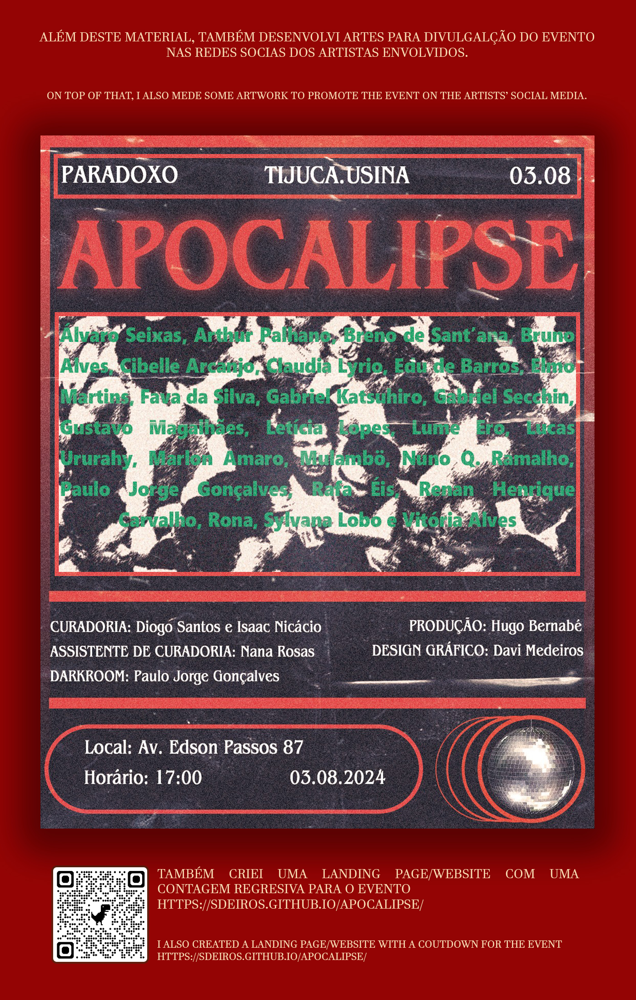
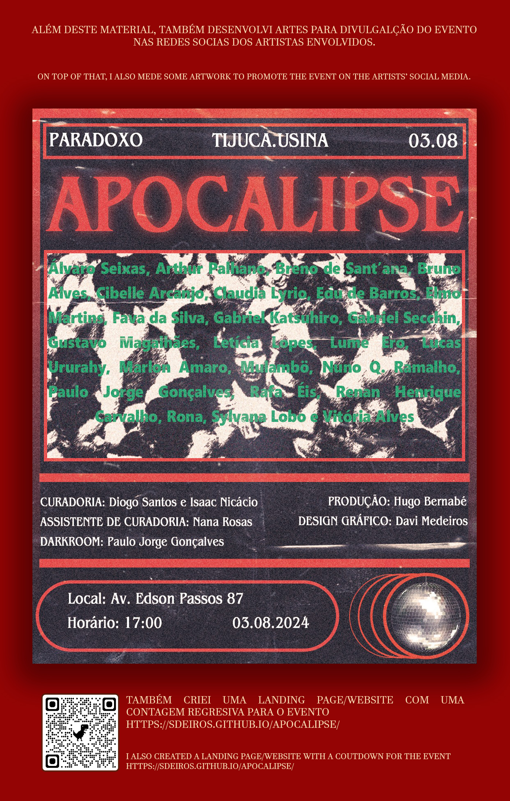

Projeto Apocalipse
Para o Projeto Apocalipse, criei uma composição gráfica que explorava elementos visuais
marcantes inspirados em temas de transformação e renascimento. Este trabalho foi uma
oportunidade para experimentar com técnicas de design, incluindo o uso de cores vibrantes e
efeitos de sobreposição, que refletem a intensidade e o simbolismo do tema.
Além do design gráfico, desenvolvi um site, que incluía uma contagem regressiva para a data
do evento. Esta funcionalidade buscava criar expectativa e engajar o público, adicionando um
elemento interativo ao projeto.
O pôster foi concebido para comunicar uma narrativa visual imersiva, trazendo à tona a
dualidade entre caos e esperança, temas centrais ao projeto. O design também foi pensado
para engajar o público e despertar a curiosidade sobre o universo criativo do Apocalipse.
Davi Medeiros | Poster & Designer Gráfico • 2024
Curadoria: Diogo Santos e Isaac Nicácio,
Assitente de Curadoria: Nana Rosas, Produção: Hugo Bernabé.


 
